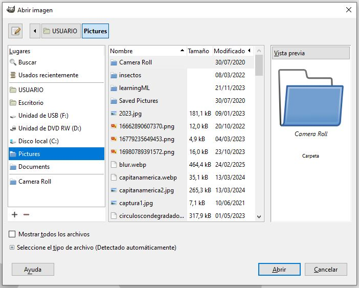

Abrir una imagen
La primera tarea que podemos hacer en GIMP es abrir una imagen existente que tengamos, por ejemplo, en nuestro ordenador. GIMP permite abrir muchos formatos de imagen de los existentes a día de hoy además, claro está, de imágenes en formato xcf que es el propio de este programa.
Abrir una imagen puede servir tanto para editar (modificar) esa imagen como para utilizar partes de esa imagen (selecciones o capas enteras) en la creación o edición de otra imagen.
GIMP permite abrir múltiples imágenes a la vez las cuales se disponen en forma de pestañas en la ventana principal de la aplicación.
Para abrir una imagen se usa el menú Archivo -> Abrir que muestra una ventana de diálogo para navegar por las carpetas de nuestro ordenador y seleccionar la imagen que queremos abrir.

Una vez abierta una imagen podemos trabajar en ella (modificarla) o utilizarla para hacer alguna selección (recorte) que podamos pegar sobre otra imagen, por ejemplo.
No olvides guardar la imagen al acabar su creación/edición o al acabar la sesión de trabajo.